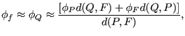
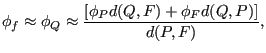

Keyword type: step
This procedure is used to perform an uncoupled thermomechanical analysis. Foreach increment a thermal analysis is performed first. Then, the resultingtemperature field is used as boundary condition for a subsequent mechanicalanalysis for the same increment. Consequently, there is no feedback from themechanical deformation on the temperature field within one and the sameincrement. Due to the sequential calculations the resulting systems ofequations are smaller and faster execution times can be expected. Moreover,the number of iterations within the increment is determined for the thermaland mechanical analysis separately, whereas in a coupled thermomechanicalanalysis the worst converging type of analysis dictates the number of iterations.
There are eight optional parameters: SOLVER, DIRECT, ALPHA, STEADY STATE,DELTMX, EXPLICIT, TIME RESET and TOTAL TIME AT START.
SOLVER determines thepackage used to solve the ensuing system of equations. The following solverscan be selected:
Default is the first solver which has been installed of the following list:SGI, PARDISO, SPOOLES and TAUCS. If none is installed, the default is the iterative solver, which comes with the CalculiXpackage.
The SGI solver should by now be considered as outdated. SPOOLES is very fast, but has noout-of-core capability: the size of systems you can solve is limited by yourRAM memory. With 2GB of RAM you can solve up to 250,000 equations. TAUCS isalso good, but my experience is limited to the  decomposition, whichonly applies to positive definite systems. It has an out-of-core capabilityand also offers a
decomposition, whichonly applies to positive definite systems. It has an out-of-core capabilityand also offers a  decomposition, however, I was not able to run either ofthem so far. Next comes the iterative solver. If SOLVER=ITERATIVE SCALING isselected, the preconditioning is limited to a scaling of the diagonal terms,SOLVER=ITERATIVE CHOLESKY triggers Incomplete Choleskypreconditioning. Cholesky preconditioning leads to a better convergence andmaybe to shorter execution times, however, it requires additional storageroughly corresponding to the nonzeros in the matrix. If you are short ofmemory, diagonal scaling might be your last resort. The iterative methodsperform well for truly three-dimensional structures. For instance,calculations for a hemisphere were about nine times faster with the ITERATIVESCALING solver, and three times faster with the ITERATIVE CHOLESKY solver thanwith SPOOLES. For two-dimensional structures such as plates or shells, theperformance might break down drastically and convergence often requires theuse of Cholesky preconditioning. SPOOLES (and any of the other direct solvers)performs well in most situations with emphasis on slender structures butrequires much more storage than the iterative solver. PARDISO is the Intel proprietary solver and is to my knowledgepresently the fastest.
decomposition, however, I was not able to run either ofthem so far. Next comes the iterative solver. If SOLVER=ITERATIVE SCALING isselected, the preconditioning is limited to a scaling of the diagonal terms,SOLVER=ITERATIVE CHOLESKY triggers Incomplete Choleskypreconditioning. Cholesky preconditioning leads to a better convergence andmaybe to shorter execution times, however, it requires additional storageroughly corresponding to the nonzeros in the matrix. If you are short ofmemory, diagonal scaling might be your last resort. The iterative methodsperform well for truly three-dimensional structures. For instance,calculations for a hemisphere were about nine times faster with the ITERATIVESCALING solver, and three times faster with the ITERATIVE CHOLESKY solver thanwith SPOOLES. For two-dimensional structures such as plates or shells, theperformance might break down drastically and convergence often requires theuse of Cholesky preconditioning. SPOOLES (and any of the other direct solvers)performs well in most situations with emphasis on slender structures butrequires much more storage than the iterative solver. PARDISO is the Intel proprietary solver and is to my knowledgepresently the fastest.
The parameter DIRECT indicates that automatic incrementation should beswitched off. The increments will have the fixed length specified by the useron the second line.
The parameter ALPHA takes an argument between -1/3 and 0. It controls thedissipation of the high frequency responce: lower numbers lead to increasednumerical damping ([54]). The default value is -0.05.
The parameter STEADY STATE indicates that only the steady state should becalculated. If this parameter is absent, the calculation is assumed to be timedependent and a transient analysis is performed. For a transient analysis thespecific heat of the materials involved must be provided.
The parameter DELTMX can be used to limit the temperature change in twosubsequent increments. If the temperature change exceeds DELTMX the incrementis restarted with a size equal to  times DELTMX divided by thetemperature change. The default for
times DELTMX divided by thetemperature change. The default for  is 0.85, however, it can be changedby the *CONTROLS keyword. DELTMX is only active in transient calculations. Default value is .
is 0.85, however, it can be changedby the *CONTROLS keyword. DELTMX is only active in transient calculations. Default value is .
The parameter EXPLICIT is only important for fluid computations. If present,the fluid computation is explicit, else it is semi-implicit. Coupled structuralcomputations are always implicit.
The parameter TIME RESET can be used to force the total time at theend of the present step to coincide with the total time at the end of theprevious step. If there is no previous step the targeted total time iszero. If this parameter is absent the total time at the end of the present step is thetotal time at the end of the previous step plus the time period of the presentstep (2nd parameter underneath the *UNCOUPLED TEMPERATURE-DISPLACEMENT keyword). Consequently, if the timeat the end of the previous step is 10. and the present time period is 1., thetotal time at the end of the present step is 11. If the TIME RESET parameteris used, the total time at the beginning of the present step is 9. and at theend of the present step it will be 10. This is sometimes useful iftransient uncoupled temperature-displacement calculations are preceded by a stationary heattransfer step to reach steady state conditions at the start of the transientuncoupled temperature-displacement calculations. Using the TIME RESET parameter in the stationarystep (the first step in the calculation) will lead to a zero total time at the start of the subsequentinstationary step.
Finally, the parameter TOTAL TIME AT START can be used to set the total timeat the start of the step to a specific value.
First line:
Example: *UNCOUPLED TEMPERATURE-DISPLACEMENT .1,1.
defines an uncoupled thermomechanical step and selects the SPOOLES solver as linear equation solverin the step (default). The second line indicates that the initial time increment is .1 and the total step time is 1.
Example files: thermomech2.